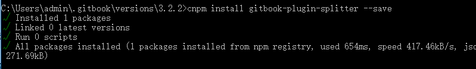
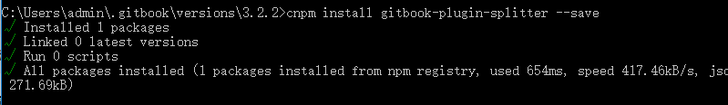

第4节：插件
插件官网:https://docs.gitbook.com/v2-changes/important-differences
一些比较常用的插件:
Example: https://www.npmjs.com/package/gitbook-plugin-github-buttons
运行安装命令如图:

插件官网:https://docs.gitbook.com/v2-changes/important-differences
一些比较常用的插件:
Example: https://www.npmjs.com/package/gitbook-plugin-github-buttons
运行安装命令如图:
